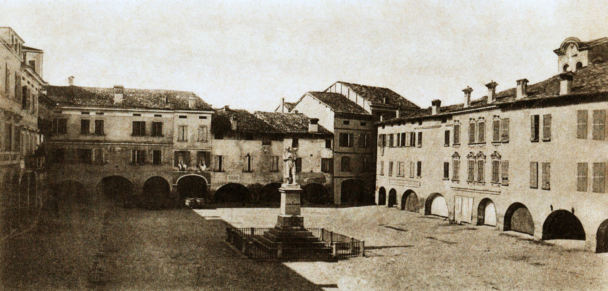
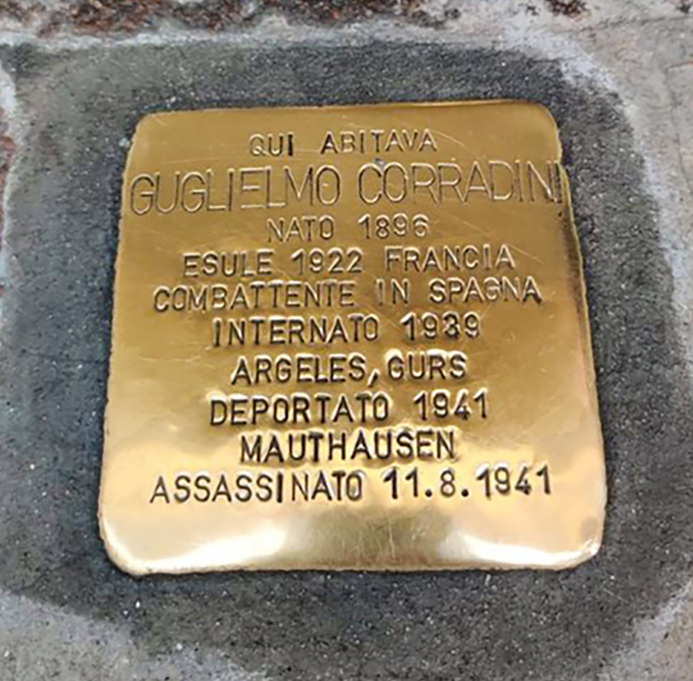

TAPPA 12: Piazza Spallanzani 9
12.1 - Guglielmo e Romeo Corradini
12.2 - Piazza Spallanzani

Nella piazza principale di Scandiano dedicata al più illustre dei suoi figli, Lazzaro Spallanzani, vennero effettuati diversi rastrellamenti dai nazifascisti, era infatti facile chiudere i due accessi di corso Vallisneri e i due passaggi pedonali, radunare qui le persone rastrellate di casa in casa e tenerle sotto sorveglianza in attesa di portarle in carcere.
Il 27 dicembre del 1944 ci fu un imponente rastrellamento da parte della Brigata Nera giunta con 30-50 uomini su camion e auto provenienti da Reggio e da altri comuni vicini. Andarono nelle case degli antifascisti e di chi sosteneva la lotta partigiana, a colpo sicuro, entrando con la violenza e trascinando fuori coloro che venivano trovati, a volte anche i familiari per poi costringere i “ribelli” a costituirsi.
Proprio questi rastrellamenti “mirati”, facevano pensare a una rete di spie e collaboratori dei tedeschi e dei fascisti diffusa in paese, a cui fanno riferimento anche alcuni rapporti delle milizie fasciste. In molte occasioni, purtroppo, i delatori e i confidenti riuscivano nel loro intento e i rastrellamenti finivano con numerosi arresti.
In questa piazza, circondata da portici, abitava la famiglia Corradini: il padre, morto giovane, la madre, tre figlie femmine e due maschi, uno socialista, l’altro comunista, perseguitati dai fascisti e da tanta fame.
Guglielmo, più volte aggredito dagli squadristi, scappò in Francia nell'autunno del 1922, stanco delle violenze subite e con la speranza di sottrarre così la famiglia alle ritorsioni dei fascisti, che di recente erano entrati in casa devastando le poche cose presenti e percuotendo l'anziana madre.
Il fratello Romeo lo seguì poco dopo, mentre nella prima metà degli anni ’30 le sorelle furono costrette a emigrare a Roma per lavorare come domestiche. A Scandiano rimaneva la madre, sola, anziana e resa invalida dai maltrattamenti ricevuti che “viveva una vita stentata e di miseria”, come scrisse lo stesso Prefetto di Reggio Emilia in una nota informativa al Ministero dell’Interno.
Quando scoppiò la guerra di Spagna nel 1936 e Hitler e Mussolini intervennero con massicci bombardamenti sulle città spagnole (tristemente famoso fra tutti quello di Guernica, che ispirò il celebre dipinto di Pablo Picasso) per sostenere il colpo di Stato di Francisco Franco contro la Repubblica democratica, GUGLIELMO CORRADINI, come tanti antifascisti, da tutta Europa accorse in aiuto degli antifascisti spagnoli.
Partecipò alla guerra di Spagna con la Brigata Garibaldi, dopo la sconfitta delle forze democratiche rientrò in Francia ma venne internato, come tanti altri, in un campo di transito, in realtà di internamento, in condizioni di vita durissime: le autorità francesi non gradirono l'arrivo di tutti quei reduci dalla guerra spagnola. Uscito dal campo, fu arruolato in una “compagnia di lavoro” al servizio dell’esercito francese e spedito a Dunkerque, dove venne fatto prigioniero dei tedeschi, che nel frattempo avevano invaso la Francia. Venne poi deportato nel campo di concentramento di Gusen, uno dei sottocampi del famigerato lager di Mauthausen, dove morì per le sevizie e gli stenti l’11 agosto 1941.
A Guglielmo è dedicata la “Pietra d’Inciampo” posta davanti posta davanti alla sua ultima abitazione da uomo libero, al n. 9 della piazza.
ROMEO CORRADINI, il fratello più giovane, anche lui esule in Francia, partecipò con Guglielmo alla guerra di Spagna, dove venne ferito e perse il braccio sinistro; rientrato in Francia dopo la sconfitta, anche lui fu costretto a vivere in diversi campi di internamento per alcuni anni, dove gli stenti, la fame e le malattie fecero numerose vittime.
Sofferente per la prigionia, appena si presentò l'opportunità decise di rientrare in Italia, ma venne fermato alla frontiera, in quanto schedato come “sovversivo”. Fu arrestato, condotto a Reggio Emilia, processato e condannato al confino a Ventotene per cinque anni con l'accusa di essere un comunista contrario al regime. Venne liberato alla caduta del fascismo, dopo l'8 settembre 1943, ed entrò nelle fila della Resistenza come partigiano.
Il 27 dicembre del 1944 ci fu un imponente rastrellamento da parte della Brigata Nera giunta con 30-50 uomini su camion e auto provenienti da Reggio e da altri comuni vicini. Andarono nelle case degli antifascisti e di chi sosteneva la lotta partigiana, a colpo sicuro, entrando con la violenza e trascinando fuori coloro che venivano trovati, a volte anche i familiari per poi costringere i “ribelli” a costituirsi.
Proprio questi rastrellamenti “mirati”, facevano pensare a una rete di spie e collaboratori dei tedeschi e dei fascisti diffusa in paese, a cui fanno riferimento anche alcuni rapporti delle milizie fasciste. In molte occasioni, purtroppo, i delatori e i confidenti riuscivano nel loro intento e i rastrellamenti finivano con numerosi arresti.
In questa piazza, circondata da portici, abitava la famiglia Corradini: il padre, morto giovane, la madre, tre figlie femmine e due maschi, uno socialista, l’altro comunista, perseguitati dai fascisti e da tanta fame.
Guglielmo, più volte aggredito dagli squadristi, scappò in Francia nell'autunno del 1922, stanco delle violenze subite e con la speranza di sottrarre così la famiglia alle ritorsioni dei fascisti, che di recente erano entrati in casa devastando le poche cose presenti e percuotendo l'anziana madre.
Il fratello Romeo lo seguì poco dopo, mentre nella prima metà degli anni ’30 le sorelle furono costrette a emigrare a Roma per lavorare come domestiche. A Scandiano rimaneva la madre, sola, anziana e resa invalida dai maltrattamenti ricevuti che “viveva una vita stentata e di miseria”, come scrisse lo stesso Prefetto di Reggio Emilia in una nota informativa al Ministero dell’Interno.
Quando scoppiò la guerra di Spagna nel 1936 e Hitler e Mussolini intervennero con massicci bombardamenti sulle città spagnole (tristemente famoso fra tutti quello di Guernica, che ispirò il celebre dipinto di Pablo Picasso) per sostenere il colpo di Stato di Francisco Franco contro la Repubblica democratica, GUGLIELMO CORRADINI, come tanti antifascisti, da tutta Europa accorse in aiuto degli antifascisti spagnoli.
Partecipò alla guerra di Spagna con la Brigata Garibaldi, dopo la sconfitta delle forze democratiche rientrò in Francia ma venne internato, come tanti altri, in un campo di transito, in realtà di internamento, in condizioni di vita durissime: le autorità francesi non gradirono l'arrivo di tutti quei reduci dalla guerra spagnola. Uscito dal campo, fu arruolato in una “compagnia di lavoro” al servizio dell’esercito francese e spedito a Dunkerque, dove venne fatto prigioniero dei tedeschi, che nel frattempo avevano invaso la Francia. Venne poi deportato nel campo di concentramento di Gusen, uno dei sottocampi del famigerato lager di Mauthausen, dove morì per le sevizie e gli stenti l’11 agosto 1941.
A Guglielmo è dedicata la “Pietra d’Inciampo” posta davanti posta davanti alla sua ultima abitazione da uomo libero, al n. 9 della piazza.
ROMEO CORRADINI, il fratello più giovane, anche lui esule in Francia, partecipò con Guglielmo alla guerra di Spagna, dove venne ferito e perse il braccio sinistro; rientrato in Francia dopo la sconfitta, anche lui fu costretto a vivere in diversi campi di internamento per alcuni anni, dove gli stenti, la fame e le malattie fecero numerose vittime.
Sofferente per la prigionia, appena si presentò l'opportunità decise di rientrare in Italia, ma venne fermato alla frontiera, in quanto schedato come “sovversivo”. Fu arrestato, condotto a Reggio Emilia, processato e condannato al confino a Ventotene per cinque anni con l'accusa di essere un comunista contrario al regime. Venne liberato alla caduta del fascismo, dopo l'8 settembre 1943, ed entrò nelle fila della Resistenza come partigiano.
